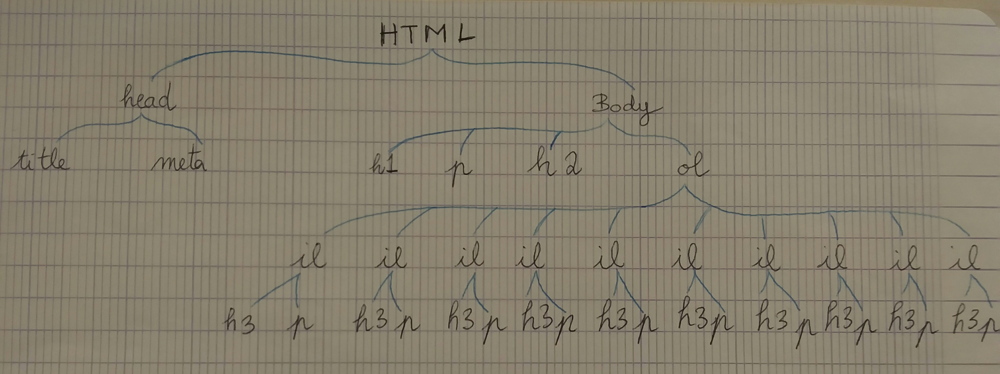

Emilie Marti - Ingénieur Informatique I
Il faut rajouter la balise <meta charset="utf-8"> pour que l'information s'affiche correctement.
Ces tags servent à marquer des titres (headers). Plus le nombre est petit, plus le titre sera gros ; cependant ceci peut etre changé ensuite via le fichier de style .css .
Le tag p sert à envelopper les paragraphes "de base".
Les tags HTML commencent par une balise ouvrante <foo> et finissent par une balise fermante </foo>.
Il faut rajouter les balises <b> gras </b> et <i> italique </i>.
Il faut mettre le mot dans les deux balises ; la première balise ouvrante étant la dernière fermante : <b><i> gras et italique </i></b>.
On rajoute le titre dans le tag <title> dans les balises <head>.
L'arbre ci-dessous.

www.w3.org
org
La première ligne de la réponse donne l'adresse IP de la machine à laquelle on veut accéder (dans ce cas 128.30.52.37). La troisième ligne de la réponse correspond au serveur mail de préference qui va recevoir les mails en SMTP envoyé vers la machine.
Remplacer l'url par son adresse IP va permettre au navigateur d'accéder au meme site (cependant, il faut l'accepter en exceptions car il ne vérifie pas les conditions de sécurité). On donne plutot le nom des machines parce que c'est plus simple pour l'etre humain de s'en rappeler.
Elle affiche toutes les machines par lesquelles passe notre requete pour arriver jusqu'à sa destination.
gwetud.u-pem.fr.
renater.fr.
geant.net, zayo.com, akamai.com, mit.edu.
On arrive jusqu'au site de gitdub mais le cours n'est pas affiché. (erreur 404), car gitdub héberge plusieurs sites et si on ne précise pas l'adresse, la machine ne sait pas quel site il faut afficher.
Cette machine est hébergée à New York (NY) aux Etats Units (US). Lorsqu'on fait un ping à imnh.org on obtient une moyenne de 80ms de latence, alors que lorsqu'on fait un ping au site du cours on obtient une moyenne de 9ms de latence. Ceci nous indique que la machine hébergeant le site ne se trouve pas au meme endroit que la machine qui héberge Gitdub.
Le fichier /etc/services fourni une correspondance entre les noms des services et leur numéro de port associés, ainsi que leurs protocoles. On a par exemple : socks - 1080/tcp
La commande grep sert à chercher un mot dans un fichier ; si ce mot existe, elle va afficher sur la ligne standard la ligne où il se trouve.
>> cat /etc/services | grep echo
Le port TCP de la commande echo est le 7.
Lorsqu'on écrit quelque chose sur le terminal, celui-ci affiche le message une seconde fois, en se comportant comme la commande echo.
Le port TCP de la commande daytime est 13. Lorsqu'on fait un netcat sur la machine gaspard.univ-mlv.fr sur le port 13, on obtient l'heure et la date de la machine hébergeant ce site.
Port 80.
HTTP/1.1 200 OK
Date: Thu, 29 Nov 2018 08:40:24
Server: Apache
Content-Length: 2957
Connection: close
Content-Type: text/html; charset=UTF-8
Apache
Cette valeur indique le type de fichier qui est lu en console et l'encodage UTF-8.
Il s'agit de la taille du fichier en octets.
On a l'erreur 404 (le fichier n'existe pas) et la version est 1.1. Le serveur est apache et le content-type indique que le type de fichier espéré (un fichier de texte html). Comme le fichier n'existe pas, il n'y a pas de taille indiquée.
Le code de retour est 302 ; la page a été trouvée, mais elle se trouve ailleurs, la requete propose donc une redirection. La version est 1.1 et le serveur est Apache. La taille est de 279 octets et il s'agit d'un fichier texte de type html avec l'encodage iso-8859-1.
Au site auquel on a été redirigés.
| * | 1 | 2 | 3 | 4 |
| 1 | 1 | 2 | 3 | 4 |
| 2 | 2 | 4 | 6 | 8 |
| 3 | 3 | 6 | 9 | 12 |
| 4 | 4 | 8 | 12 | 16 |
| * | 1 | 2 | 3 | 4 |
|---|---|---|---|---|
| 1 | 1 | 2 | 3 | 4 |
| 2 | 2 | 4 | 6 | 8 |
| 3 | 3 | 6 | 9 | 12 |
| 4 | 4 | 8 | 12 | 16 |
| * | 1 | 2 3 | 4 | |
|---|---|---|---|---|
| 1 | 1 | 2 | 3 | 4 |
| 2 | 4 | 6 | 8 |